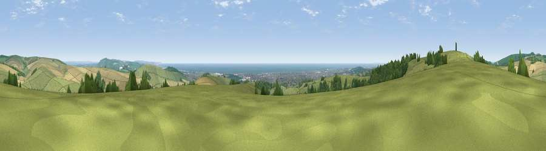

Viewpoint near Findon
#2071 in England · top 11% of its area beats it · near Findon · open accessWhere it is
The exact computed spot (TQ 14600 07875). Click the marker for map links.
Public access: this spot lies on mapped open-access land (CRoW Act 2000) — you may roam here on foot. Computed from Natural England's CRoW access layer and OpenStreetMap rights of way — not the legal definitive map. Always verify locally.
The view, rendered

A 360° render of this exact spot computed from the terrain model, tree cover and land cover — summer colours, afternoon light, calibrated against photographs of famous viewpoints. Real trees, hedges and buildings will differ in detail.
The panorama
Grey silhouette: terrain skyline in each direction (720 bearings, Earth curvature and refraction included). Dashed green: skyline with trees (+15 m) and buildings (+8 m) as obstacles. Blue strip: how far the ground is visible on each bearing.
Where the view opens
Wedge length = distance to the farthest visible ground on that bearing (vegetation-aware). Rings at 10, 25 and 50 km.
What fills the view
47% grassland · 23% cropland · 12% water · 11% woodland · 7% built-up
Angular shares of the visible panorama (visual magnitude), not map area. Landscape diversity 0.60 (0–1 Shannon).
Key numbers
More beautiful places nearby
The staircase of upgrades: each row has a higher view potential than everything closer. Driving times are estimates from straight-line distance, calibrated against real road routing — check an actual route before setting out.
| Place | Direction | Drive | Score |
|---|---|---|---|
| Viewpoint near Findon | WNW · 1 km | ~2 min | 77.8 |
| Steep Down | E · 2 km | ~6 min | 79.1 |
| Steyning Round Hill | NE · 3 km | ~7 min | 79.9 |
| Viewpoint near Steyning | NNE · 3 km | ~8 min | 82.6 |
| Chanctonbury Ring | N · 4 km | ~10 min | 87.0 |
| Firle Beacon | E · 34 km | ~52 min | 88.9 |
| Viewpoint near Niton | WSW · 72 km | ~96 min | 89.2 |
| Viewpoint near West Bexington | W · 161 km | ~183 min | 89.5 |
50.85904, -0.37312 · source: screening · position refined by local search. Computed location — check access rights before visiting.